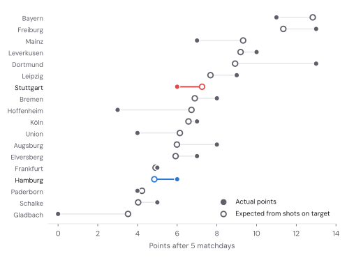
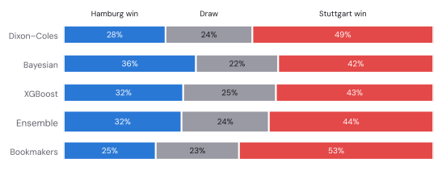
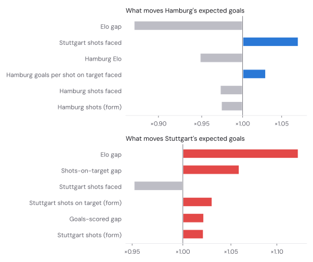
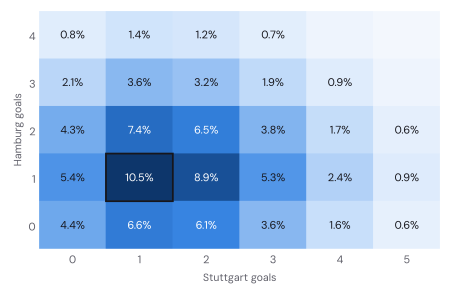
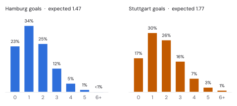
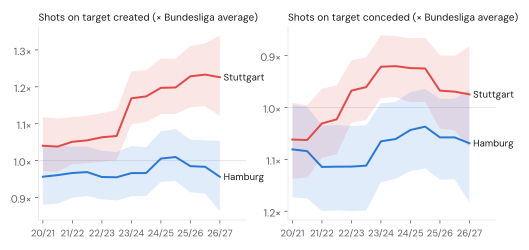
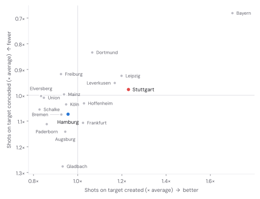
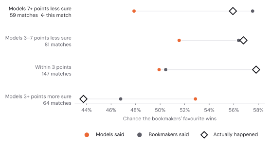
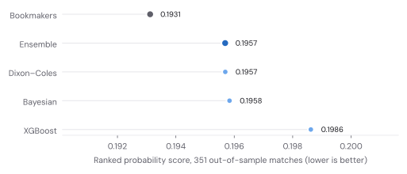
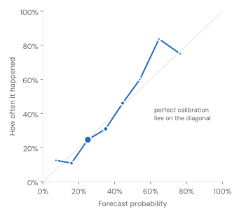

MATCHDAY 6 · PRE-MATCH FORECAST
Hamburg vs Stuttgart: my models pick a fight with the bookies.
Both clubs have six points from five games. My models make this close to a coin toss with a draw attached. The bookmakers make Stuttgart clear favourites. Last week the models won that argument. Five seasons of data say they usually lose it.
The short version
Expected goals 1.47 – 1.77 Most likely score 1–1 (10.5%) Over 2.5 goals 63% Both teams score 64%
Stuttgart are favourites, but only just in my numbers: 44% against 32% for Hamburg, with the draw at 24%. The bookmakers are firmer, at 53% for Stuttgart. That gap of 8 percentage points is the most interesting thing about this match, so a good part of this post is about who to believe.
Spoiler: probably the bookmakers. When my models have been this much less sure of a favourite than the market, the favourite won 56% of the time. The models had said 48% and the bookmakers 58%.
Six points each, by very different routes
| 2026/27, matchdays 1–5 | Hamburg | Stuttgart |
|---|---|---|
| Points (won–drawn–lost) | 6 (2–0–3) | 6 (2–0–3) |
| Goals for – against | 5 – 15 | 8 – 9 |
| Shots for – against | 53 – 91 | 79 – 96 |
| Shots on target for – against | 19 – 29 | 30 – 30 |
| Opponents’ goals per shot on target | 52% | 30% |
| Points expected from shots on target | 4.8 | 7.3 |
| Last season | 13th, 38 points | 4th, 62 points |
Hamburg collected their points in an unusual order. They lost their first three games 12–0 on aggregate, then beat Köln 2–1 and won 3–2 in Hoffenheim, against a home side that finished with ten men. They have been out-shot in all five games, 91 to 53 in total.
The number that jumps out is at the back. Opponents have scored with 15 of their 29 shots on target against Hamburg, more than half. The Bundesliga average is about one in three. Over five games that is mostly bad luck, plus whatever share belongs to the goalkeeper, and the models expect it to fade.
Stuttgart finished fourth last season and are back in the Champions League, which so far looks like a full-time job. Their league shot numbers are ordinary: out-shot 96 to 79, level on shots on target at 30 each. The 5–1 at Bayern on the opening night did a lot of that damage, but not all of it.
Count every shot on target as a one-in-three chance of a goal, work out the odds of every possible scoreline in each match, and you get the points each side “should” have. Stuttgart come out at 7.3, Hamburg at 4.8. Same table position, different stories:

The whole calculation fits in a few lines:
CONV = 0.335 # Bundesliga goals per shot on target, 2023/24 to now
def xpts(sot_for, sot_against):
a = binom.pmf(np.arange(sot_for + 1), sot_for, CONV) # P(0, 1, 2, … goals)
b = binom.pmf(np.arange(sot_against + 1), sot_against, CONV)
M = np.outer(a, b) # every possible scoreline
return 3 * np.tril(M, -1).sum() + np.trace(M) # 3 × P(win) + 1 × P(draw)It treats a tap-in and a speculative 30-yarder the same, so it is a smell test rather than a verdict. Still, it smells like Hamburg have been lucky with results (six points from shots worth 4.8) and unlucky at the back (15 goals conceded from shots worth about 10), while Stuttgart have been a little wasteful in front of goal (8 scored from shots worth about 10).
Three models and an average
Same three models as in last week’s Augsburg vs Bayern forecast, which explains them in more detail. Same equal weights too. Tinkering with the recipe after a 2–2 would be the fastest way to make the backtest meaningless.

- Dixon–Coles is the most Stuttgart-friendly at 49%. It only looks at goals, and over the past year Stuttgart scored a lot more of them: 71 to Hamburg’s 40 last season.
- The Bayesian shots-to-goals model is the most Hamburg-friendly at 36% for a home win. It expects 4.8 shots on target from Hamburg and 5.6 from Stuttgart, with about a third of each going in. Stuttgart’s ordinary start shows up here, and so does home advantage, which the model puts at 22% more shots on target for the home side.
- XGBoost lands in between, at 43% for Stuttgart. The Elo gap between the clubs does most of the work. Stuttgart conceding plenty of shots lifts Hamburg’s expected goals.

The scoreline

1–1 is the single most likely score at 10.5%, followed by 1–2 (8.9%) and 2–1 (7.4%). A one-goal game either way: 37%. Stuttgart by two or more: 24%. Hamburg by two or more: 15%. Over 2.5 goals (63%) and both teams scoring (64%) come out a little below what the bookmakers’ prices imply (68% and 66%), so on goals, at least, nobody is far apart.

How strong are they, really?
The Bayesian model’s view of both clubs since 2020/21, relative to the average Bundesliga side of each season. The 2. Bundesliga years count too: Hamburg spent five of these seasons there. Shaded bands are 80% credible intervals.

Stuttgart create about 1.23× the shots on target of an average side, second only to Bayern. Their problem is the other end: they now allow 0.98× the average, where two seasons ago they allowed 8% fewer than average. Hamburg sit at 0.96× and 1.07×: below average on both counts, but not hopelessly, and with wide bands because five games is not much evidence.

Who wins the argument?
This is the second week running that my models are kinder to the underdog than the bookmakers. Last week it worked: Augsburg drew 2–2 with Bayern and the models beat the market on that match. One match proves nothing, so I went back through the backtest and grouped every match by how much the models and the market disagreed about the favourite.

When the models were at least 7 points less sure of the favourite than the market, as they are today (8 points), the favourite won 56% of the time. The models had said 48%, the bookmakers 58%. Those are only 59 matches, so I ran the same check on the two models that I can backtest back to 2022/23, 1,269 matches in all: 51% from the models, 61% from the bookmakers, 66% in reality. It works the other way round too. When the models liked a favourite more than the market did, the market was closer again.
The likely reason is boring. The bookmakers know things my models don’t: line-ups, injuries, and what a Champions League squad is worth on an off day. My models know shots and results. When the two disagree by this much, the gap is usually information the models are missing, not something clever the market overlooked.
I am not changing the published forecast, because changing a forecast after looking at the answer key is how backtests become fiction. But if you want a single number for Stuttgart, the evidence puts it between 44% and 53%, and nearer the second.
Should you trust any of it?
Same test as last week, now with matchday 5 included: every match of 2025/26 and this season replayed as if it were next weekend’s fixture, each model refitted on only what it could have known at the time, and every forecast scored with the ranked probability score (RPS). Lower is better; a know-nothing forecast of one-third for everything scores 0.238.
| Out-of-sample, 351 matches | RPS | Log loss | Top pick correct |
|---|---|---|---|
| Bookmakers | 0.1931 | 0.955 | 55% |
| Ensemble | 0.1957 | 0.966 | 55% |
| Dixon–Coles | 0.1957 | 0.968 | 55% |
| Bayesian | 0.1958 | 0.968 | 54% |
| XGBoost | 0.1986 | 0.973 | 54% |
The ensemble is level with Dixon–Coles, the best of its parts, and ahead of the other two. Averaging hasn’t found extra accuracy over this stretch; what it buys is insurance against any single model’s bad weeks.
The bookmakers are still better, by 0.0026 RPS (95% bootstrap interval −0.0017 to +0.0068). Over the three seasons before that, Dixon–Coles trailed them by 0.0067 a season on average. It is the disagreement chart above, told with one number.
This season, after 45 matches, the ensemble is ahead of the bookmakers (0.2046 against 0.2119). On this blog the running score is one forecast, one win for the models. I am aware of how both of those sound, and of how little they prove.
The calibration curve shows the same habit. The ensemble’s forecasts between 45% and 60%, the range this match sits in, averaged 51%; those outcomes happened 55% of the time (128 forecasts). The models are a little too timid about favourites.


What the models don’t know
- Wednesday night in Bratislava. Stuttgart won 3–0 at Slovan Bratislava in the Champions League on Wednesday and host Atlético Madrid on Tuesday. The XGBoost features count rest days from league games only, so as far as they know, Stuttgart had a quiet week. Some rotation looks likely.
- Team news. Starting11’s reported availability, not a confirmed team sheet, has Hamburg without Daka, El Ouahdi, Vušković, Grønbæk and Rössing-Lelesiit, with Jatta, Poulsen, Remberg, Nadir and Moffi doubtful. Stuttgart are listed without Zagadou, Al Dakhil, Tomás, Nartey and Mittelstädt, with Chabot and Jaquez doubtful. Long lists on both sides; the models see none of it.
- History. Stuttgart beat Hamburg 6–1 on aggregate in the 2023 relegation play-off and 4–0 in April. Hamburg won the meeting in Hamburg last November 2–1, with ten men and two shots on target. Head-to-head records are mostly noise, but that last one deserves a mention for sheer cheek.
Verdict
Stuttgart, probably. My models say 44%, the bookmakers 53%, and the track record says lean towards the bookmakers. The most likely single score is 1–1, the one result that lets both clubs tell themselves everything is fine. If Hamburg win, my models will be unbearable. If Stuttgart win comfortably, next week’s post gets a section called “Who wins the argument, part two”.
Run it yourself
The whole analysis, from data download to the last chart, runs in one notebook. Choose a GPU runtime: the Bayesian model’s chains run on the GPU through JAX, and XGBoost trains with CUDA. New this week: the fixture lives in a small match.json, so you can point the notebook at any Bundesliga match by changing two team names, a date and the odds.
It pins the data to the same snapshot, so you should land within about a percentage point of the numbers here (MCMC is random, and GPUs do arithmetic in a slightly different order).
Data and sources
Results, shots, shots on target, red cards and bookmaker closing odds: football-data.co.uk, via the xgabora/Club-Football-Match-Data GitHub mirror (2005/06 to matchday 1) and football-data.co.uk directly for matchdays 2–5. Matchday 5 results cross-checked against the Sportradar match centre, which is also the source for Stuttgart’s Champions League results. Odds for this match: Bet365 (3.80 / 4.20 / 1.80), as quoted by KickOff on 15 October. Team news: Starting11; it was not used by the models. 2023 play-off: web.de. Method references: Dixon & Coles (1997), Modelling association football scores and inefficiencies in the football betting market; Hoffman & Gelman (2014), The No-U-Turn Sampler.